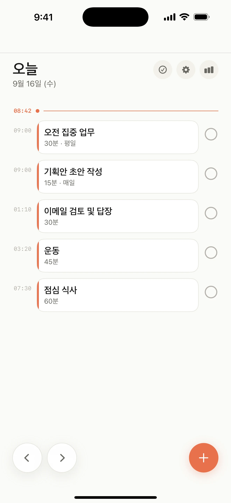
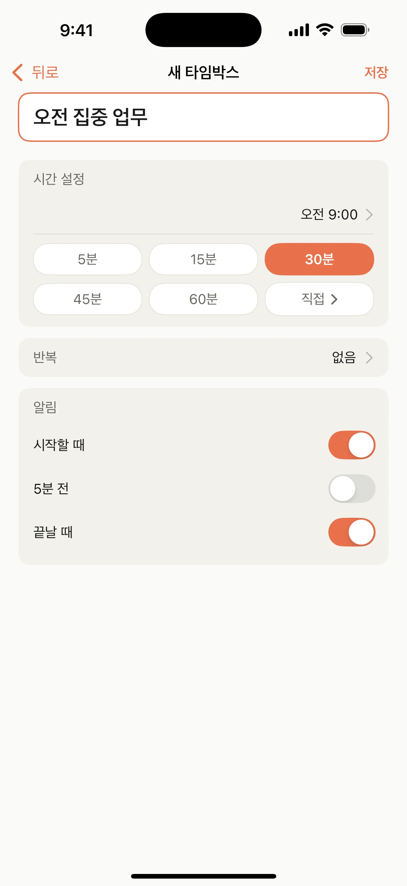
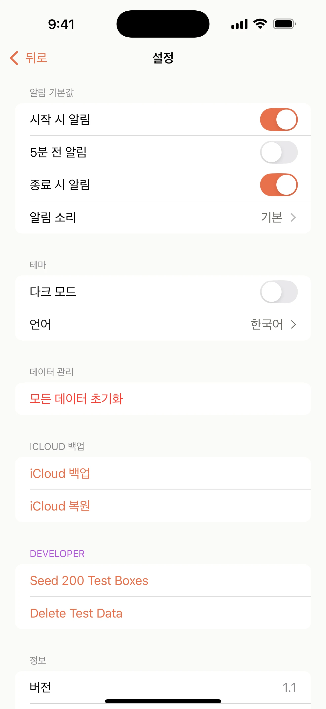
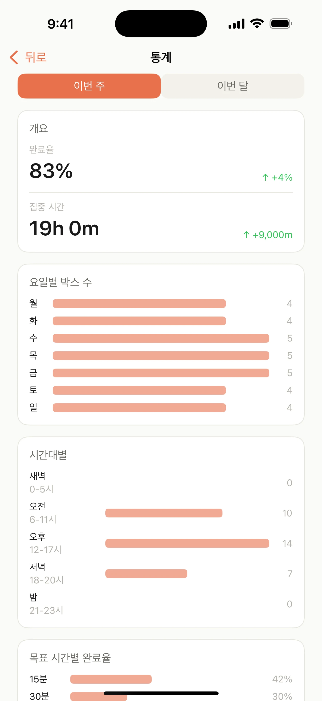

01
오늘을 한눈에
오늘의 타임박스를 시간순으로 보고, 지금 해야 할 일에 집중하세요.

한 줄 적고, 바로 시작
필요한 만큼만 계획하고, Boxday가 시작할 순간을 챙기게 하세요.
오늘의 타임박스를 시간순으로 보고, 지금 해야 할 일에 집중하세요.
제목, 시작 시간, 길이만 정하면 바로 준비됩니다.

시작·5분 전·종료 알림을 원하는 방식으로 정하세요.

이번 주의 집중 흐름과 완료 기록을 부담 없이 돌아보세요.

신뢰를 위한 설계